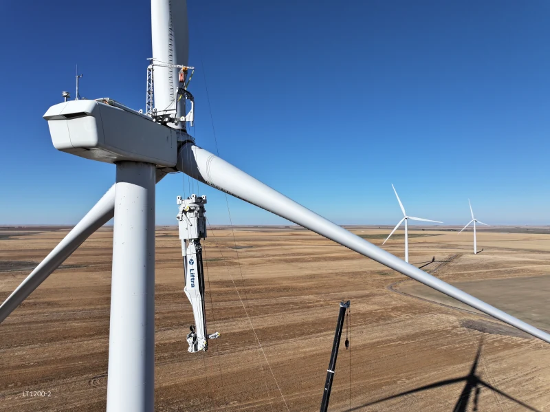
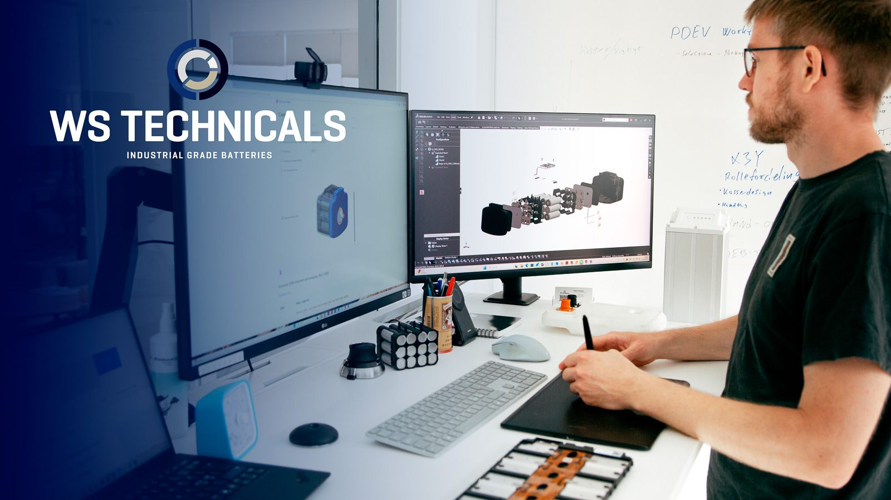
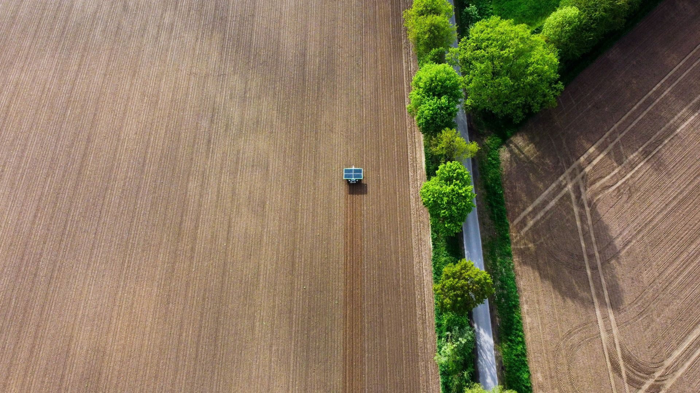
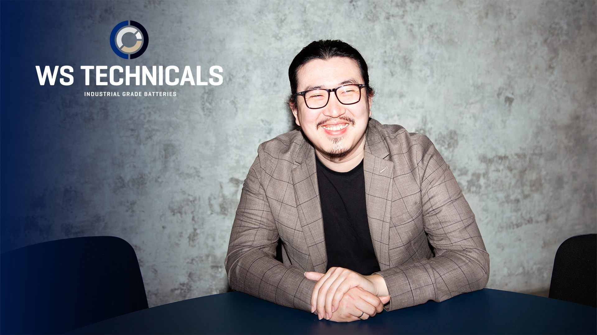
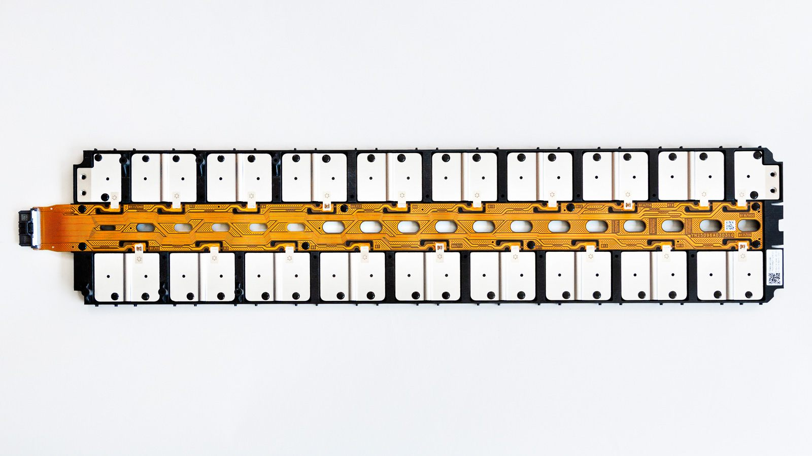
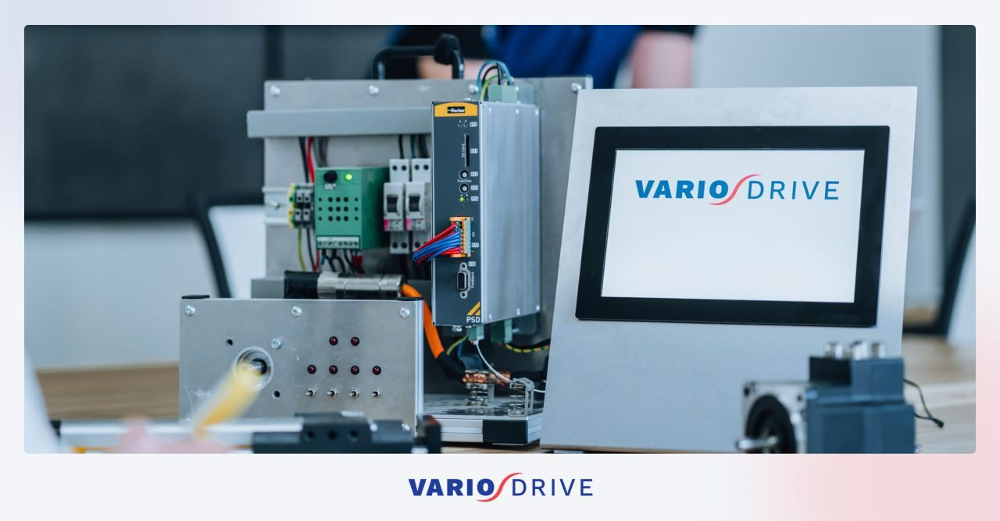
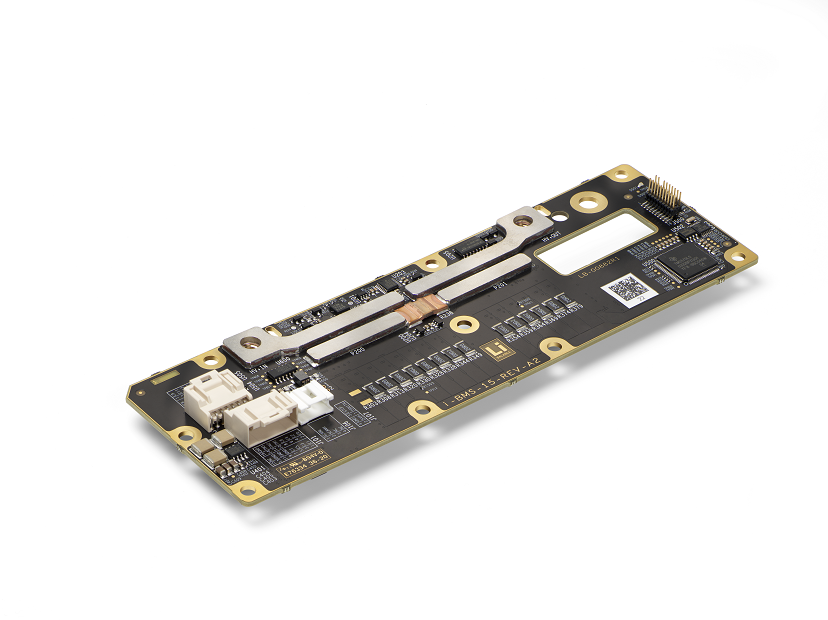
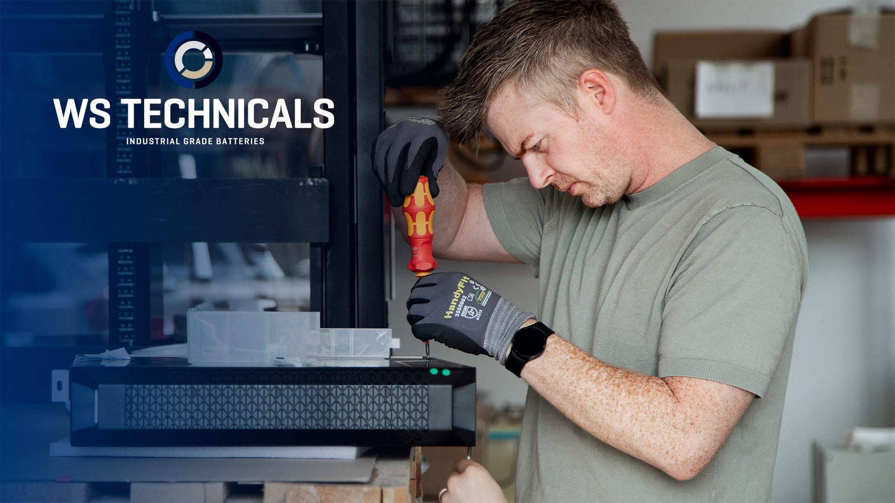
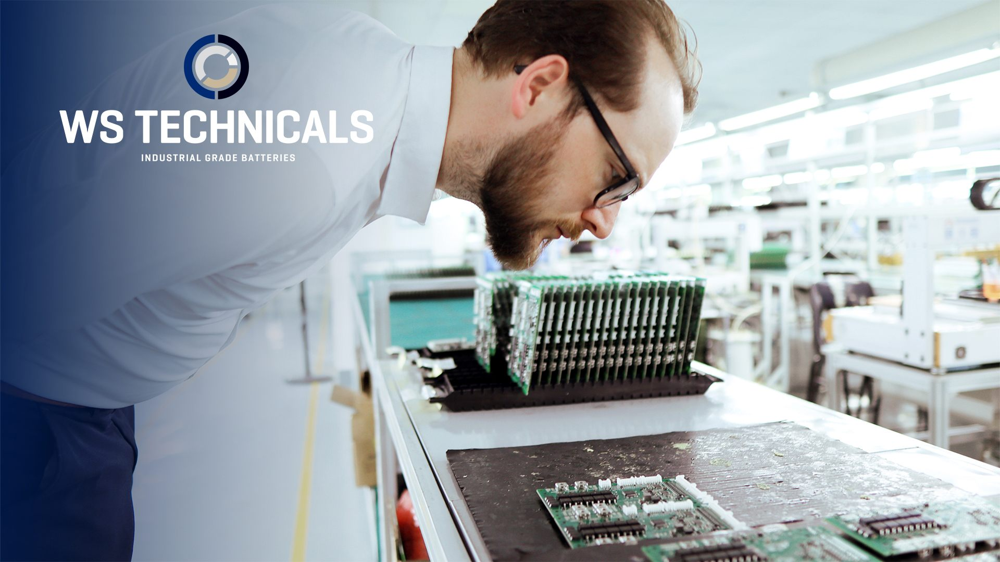

Liftra lifts the future of wind energy
A crane that climbs the wind turbine itself, and the battery systems that made going electric possible.
Read the storyExplore our latest customer success stories, employee interviews and industry insights. We are dedicated to sharing our knowledge and experience from the battery industry, while keeping you updated on relevant trends, developments and technologies.

A crane that climbs the wind turbine itself, and the battery systems that made going electric possible.
Read the story
For Senior Project Engineer Søren Nørby, the hardest problems are rarely the ones that sound most advanced.
Read the story
A solar-powered seeding and weeding robot that can eliminate up to 80% of manual hand weeding.
Read the story
How WS Technicals bridges Danish engineering and Chinese battery manufacturing.
Read the story
A new in-house capability that gives WS Technicals greater control over a critical part of the battery module.
Read the story
Linddana's electric woodchippers are the result of a deliberate decision to lead the way.
Read the story
Electronics Engineer Peter sits at the intersection of chemistry, mechanics and software.
Read the story
When tradition meets transformation: adapting a motion-control business for an electrified future.
Read the story
How the i-BMS15 helps AGVs and AMRs meet Performance Level C safety requirements.
Read the story
Project Engineer Anders on translating hundreds of customer specifications into one working battery.
Read the story
The batteries powering an electronic, poison-free rodent trap built for reliability and long service life.
Read the story
Fifteen years of lithium batteries at WS Technicals, told by founder and CEO Louis Billesøe Danielsen.
Read the story
A modular automated warehouse robot that had to fit tight space constraints without compromising fire safety.
Read the storyTell us about the application and the constraints it has to work within. We'll tell you what a dependable battery system for it actually looks like.